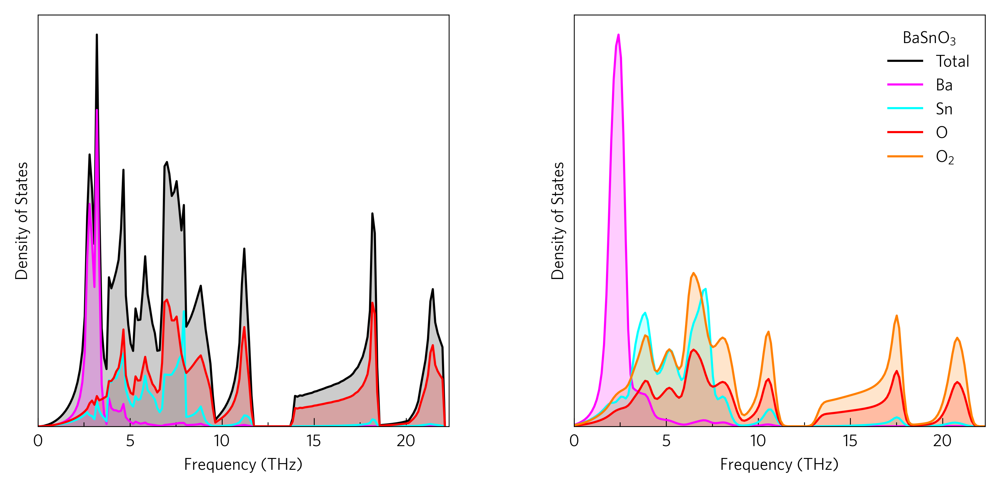

Density of States (DoS)¶
This shows a two densities of states (DoSs), which show the density of phonon modes at particular frequencies.
The left plot can be generated by:
tp plot dos ../data/basno3/projected_dos.dat --total --nolegend -c pink -c cyan -c red -p ../data/basno3/POSCAR
And the right plot by:
tp plot dos ../data/basno3/projected_dos.dat --atoms "Ba Sn O O_2 2" --sigma 0.2 --location 1 -c magenta -c cyan -c red -c orange
Or the whole thing in python with:
The most foolproof way of specifying colours is through a dictionary (lines 8-11), but colours, linestyles etc. as well as atoms can also be specified in POSCAR order.
Manually specifying atoms (line 20) rather than reading from
the POSCAR enables the separation of different environments of the same atom,
and in this instance no POSCAR is required. The default for the poscar
argument is POSCAR, so often this will not need to be specified anyway.
If desired, the atom-projected dos can be disabled entirely by setting
projected to False, and in the same way the total can be enabled
or disabled (line 17).
To recreated experimental data more closely, Gaussian smearing can be applied
with sigma (line 21). This option may be quicker and easier than rerunning
phonopy to compare, but beware it does not detect if smearing is already
applied. A good starting value is 0.2, as used here.